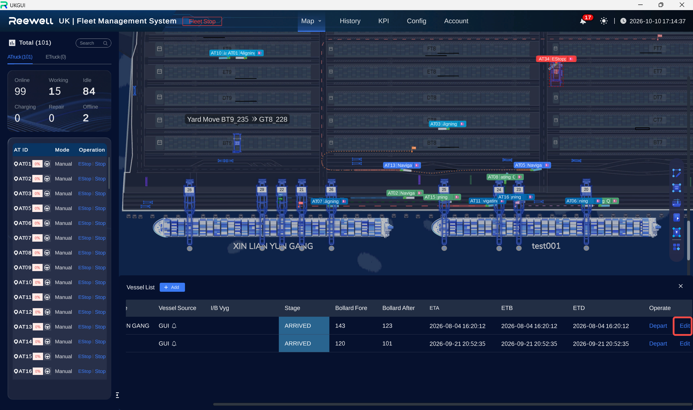

FMS
用户操作指南
Fleet Management System
POF · 中文版
Fleet Management System
POF · 中文版
本章用船舶信息编辑和 VPB 布局原则演示两种页面：功能操作页说明入口和执行方法；原理说明页解释配置原则。
船舶信息或作业绑定发生变化时，使用编辑功能更新船舶配置。

VPB 是 AT 进入或离开岸桥作业区时经过的区域或点位，其位置和方向会影响通行路径、排队与等待。
| 术语 | 含义 |
|---|---|
| in-vpb / out-vpb | 上岸桥 VPB / 下岸桥 VPB |
| SSQ | 灵活锁站 |
| Stop / Estop | 缓停 / 紧停 |